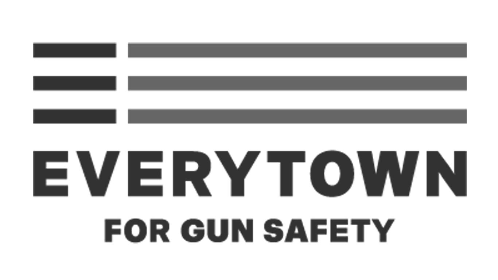

Through the analysis of mass shooting data collected by the Southern Poverty Law Center, our team attempted to understand the basic questions of where these shootings occurred and if certain things imcreased the chances of one happening. Utlizing the Census and numerous organizations' efforts to track and establish a record of these instances, we looked for insight into the following questions:
Data
- Mass Shooting Statistics:
https://www.gunviolencearchive.org/reports - US Census API: https://github.com/datamade/census
- Hate Group Data: https://www.splcenter.org/hate-map
- Gun Law Data: https://lawcenter.giffords.org/scorecard/
- Have
mass shootingrates increased over the years? - Where are
mass shootingshappening most often and where are they the deadliest? - Does gun legislation have any relationship to number of
mass shootings? - Does hate group activity have any relationship with number of
mass shootings?

-
Mass Shooting Definition:
4+ victims injured or killed excluding the subject/suspect/perpetrator, one location. (Gun Violence Archive) -
Hate Group Definition:
An organization that – based on its official statements or principles, the statements of its leaders, or its activities – has beliefs or practices that attack or malign an entire class of people, typically for their immutable characteristics. (Southern Poverty Law Center) -
Region Definitions:
- Urban - Region with a density greater than 3000 ppl / sq mi
- Suburban - Region with a density greater than 1000 ppl / sq mi but less than 3000 ppl / sq mi
- Rural - Region with a density less than 1000 ppl / sq mi
-
State Gun Laws:
Attorneys track and analyze gun legislation in all 50 states, evaluating bills for their relative strength or weakness. Taking note of newly enacted laws, they use an exhaustive quantitative rubric to score each state on its gun law strength, adding points for safety regulations like universal background checks and extreme risk protection orders and subtracting points for reckless policies like “Stand Your Ground” and permitless carry laws. (Giffords Law Center)